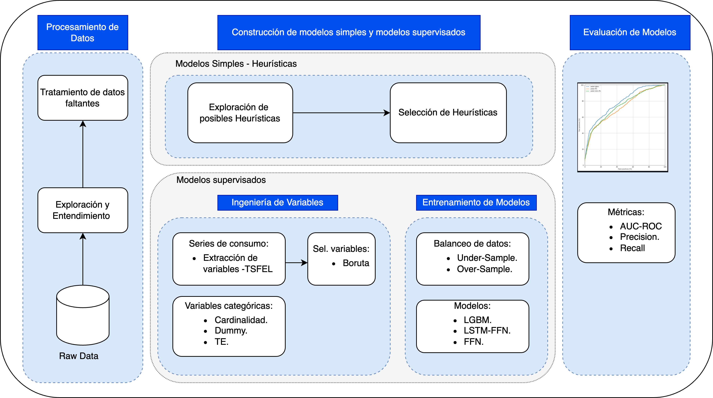
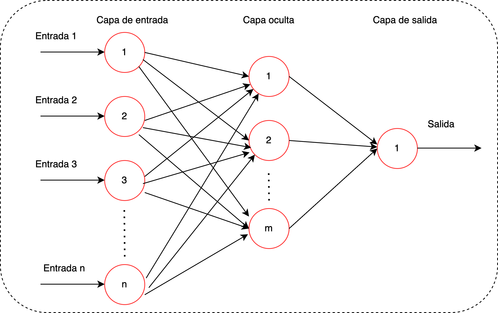
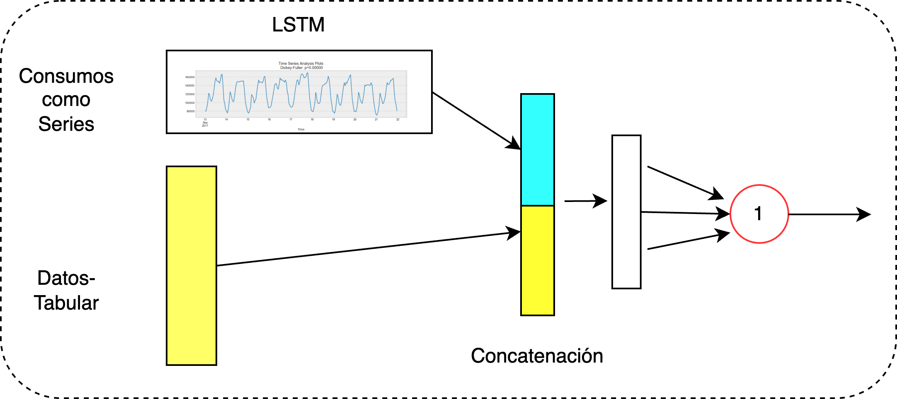
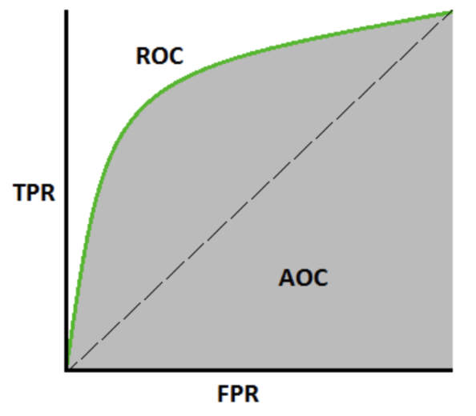

Overview¶
Energizados is a machine learning framework for detecting non-technical losses (NTL) — electricity theft and meter fraud — in energy distribution systems.
The Problem¶
Non-technical losses represent a significant financial and operational challenge for energy distributors. Detecting fraudulent users manually is time-consuming and imprecise. Energizados automates this process using machine learning, reducing regularization time and increasing identification accuracy.
In practice, fraudulent users are rare: NTL rates typically stay below 10%, which means working with heavily imbalanced datasets. Energizados handles this by design.
Framework Stages¶
The framework is structured in three sequential stages:

Stage 1 — Data Preprocessing and Exploration¶
Raw data is transformed into a meaningful structure for modeling. This stage includes:
- Exploratory data analysis (EDA) to understand distributions, nulls, and outliers
- Identifying useful variables beyond raw consumption (tariff type, economic activity, geographic zone)
- Observing class imbalance between fraudulent and non-fraudulent users
Stage 2 — Model Construction¶
Two levels of models are built:
Simple (Rule-Based) Models¶
Analytical rules derived from domain expertise and EDA:
- Consumption drop: Detects users whose current consumption dropped dramatically compared to prior periods
- Constant consumption: Identifies users with suspiciously flat consumption over extended periods
These serve as interpretable baselines.
Supervised Models¶
More complex models trained on labeled data:
-
Feature Engineering: Derives new variables from the 12-month consumption series:
- Statistical: max, mean, min, median, std
- Spectral: signal slope, signal variance, signal distance
- Temporal: autocorrelation, entropy, centroids
-
Feature Selection: Removes constant, highly correlated, or irrelevant features (Boruta, correlation, constant variance, categorical, mutual information)
-
Imbalanced data handling: Under-sampling or over-sampling strategies (imbalanced-learn)
-
Hyperparameter optimization: Random Search over configurable parameter grids
-
Models available:
LightGBM — A gradient boosting model that builds an ensemble of decision trees iteratively: each new tree focuses on the cases where the previous one performed worst. It is fast, memory-efficient, and handles missing values natively.
Feedforward Neural Network — A multilayer network where all signals flow in one direction (input → hidden layers → output). Each neuron is connected to the next layer via learnable weights. The inputs are preprocessed categorical features concatenated with row-scaled consumption values.

LSTM + Feedforward — Combines a recurrent LSTM branch (which processes the 12-month consumption series as a sequence, retaining temporal memory) with a dense branch for categorical features. Both branches are concatenated before the output layer.

CatBoost — Gradient boosting with native support for categorical features, no manual encoding required.
XGBoost — Gradient boosting (sklearn-compatible) with strong tabular accuracy. Optional dependency: install with pip install energizados[xgboost].
Ensemble — Combines multiple base models via soft voting (weighted average of probabilities) or stacking (a meta-learner trained on base model predictions).
Stage 3 — Model Evaluation¶
Trained models are evaluated on held-out data. The primary metric is AUC-ROC:
- Measures a model's ability to separate fraudulent from non-fraudulent users across all classification thresholds
- A higher AUC means the model is better at ranking fraudulent users above legitimate ones
- Formally:
TPR = TP / (TP + FN)vsFPR = FP / (FP + TN)across thresholds
Additional metrics: precision, recall, F1, confusion matrix, cumulative gains curve.
- SHAP-based model explainability (summary + bar plots) for regulatory compliance

Sample Dataset¶
New projects created with energizados init include a synthetic dataset (generated to match the statistical properties of real electricity consumption data — no real customer information) for immediate testing:
| Property | Value |
|---|---|
| Records | 42,500 |
| Columns | 20 |
| Fraudulent users | ~5.9% |
Note: The raw parquet carries 20 columns. One of them,
index, is a row-identifier artifact from the parquet export and is not a model feature — the 19 remaining columns are the meaningful variables described below.
Column descriptions:
| Variable | Description | Type | Cardinality |
|---|---|---|---|
index |
Row identifier (parquet export artifact; not a feature) | — | — |
1_anterior ... 12_anterior |
Monthly energy consumption (last 12 months) | Numeric | — |
actividad |
User's economic activity | Categorical | 284 |
tipo_tarifa |
Billing tariff type | Categorical | 47 |
nivel_tension |
Installed voltage level | Categorical | 18 |
material_instalacion |
Meter material type | Categorical | 39 |
zona |
Geographic zone | Categorical | 38 |
target |
Fraudulent (1) or non-fraudulent (0) | Binary | 0–1 |
fecha_inspeccion |
Inspection date | Date | — |